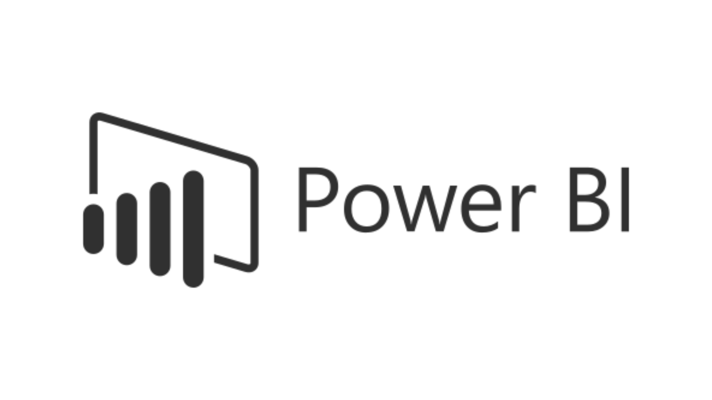

O que é o Power BI?
O Power BI é uma plataforma de análise de dados que permite a coleta, transformação e visualização de informações de diversas fontes. Com ele, usuários podem criar painéis interativos e relatórios que ajudam na interpretação de dados, facilitando a análise e a comunicação de resultados.
https://icon-icons.com/pt/icone/microsoft-powerbi-logo/169958
Principais Funcionalidades
1. Conexão com Fontes de Dados
Importação de Dados: O Power BI permite a conexão a diversas fontes, como Excel, bancos de dados SQL,
serviços na nuvem (como Azure e Google Analytics), entre outros.
Atualização Automática: Você pode
programar atualizações automáticas para garantir que os dados estejam sempre atualizados.
2. Transformação de Dados
Power Query: Utilize o Power Query para limpar, transformar e modelar dados antes de visualizá-los. Isso inclui a remoção de duplicatas, a alteração de tipos de dados e a criação de novas colunas.
3. Criação de Visualizações
Gráficos Interativos: Crie gráficos de barras, linhas, pizza, mapas e muito mais. O Power BI oferece uma
variedade de opções de visualização para apresentar seus dados de maneira clara.
Dashboards
Personalizados: Combine várias visualizações em um único painel, permitindo uma análise abrangente em um só
lugar.
4. Relatórios e Compartilhamento
Relatórios Dinâmicos: Elabore relatórios interativos que os usuários podem explorar em detalhes, filtrando e
navegando pelos dados.
Compartilhamento: Os relatórios podem ser publicados no Power BI Service,
permitindo que sejam compartilhados com colegas ou partes interessadas, com opções de controle de acesso.
5. Análises Avançadas
DAX (Data Analysis Expressions): Utilize a linguagem DAX para criar medidas e colunas calculadas que permitem análises mais complexas.
Inteligência Artificial: O Power BI oferece recursos de IA, como análise preditiva e visualizações automatizadas, para ajudar na tomada de decisões.
Como Começar a Usar o Power BI
-
Passo 1: Instalação do Power BI Desktop
Baixe e instale o Power BI Desktop, que é gratuito e permite que você crie relatórios e visualizações localmente.
-
Passo 2: Conectar-se a uma Fonte de Dados
Abra o Power BI Desktop e clique em "Obter Dados". Selecione a fonte de dados desejada (Excel, SQL, etc.) e siga as instruções para importar os dados.
-
Passo 3: Transformar Dados com Power Query
Após importar os dados, use o Power Query para transformá-los conforme necessário. Clique em "Transformar Dados" e aplique as alterações desejadas.
-
Passo 4: Criar Visualizações
Com os dados prontos, comece a criar visualizações. No painel "Visualizações", escolha o tipo de gráfico ou tabela que deseja usar e arraste os campos para a área correspondente.
-
Passo 5: Construir um Relatório
Organize suas visualizações em um layout coeso. Adicione títulos, filtros e interações para criar um relatório interativo.
-
Passo 6: Publicar e Compartilhar
Após concluir seu relatório, clique em "Publicar" para enviá-lo para o Power BI Service. Você pode compartilhar o relatório com outras pessoas e definir permissões de acesso.
Dicas de Uso
-
Explore Visualizações Personalizadas: Acesse a biblioteca de visualizações personalizadas no marketplace do Power BI para enriquecer seus relatórios com gráficos que atendem às suas necessidades específicas.
-
Utilize Recursos de Colaboração: Comente e interaja com outros usuários diretamente nos relatórios publicados, facilitando a colaboração em equipe.
-
Acompanhe a Performance: Utilize o recurso de "Análise Rápida" para identificar tendências e padrões nos dados de forma ágil.
Cursos indicados
Para o Power BI recomendamos esses 3 cursos. O primeiro é do canal Prime Cursos do Brasil, o segundo canal é do Hashtag Treinamentos e o último da Microsoft.
Caso prefira leitura, no site da Microsoft você pode se aprofundar mais.